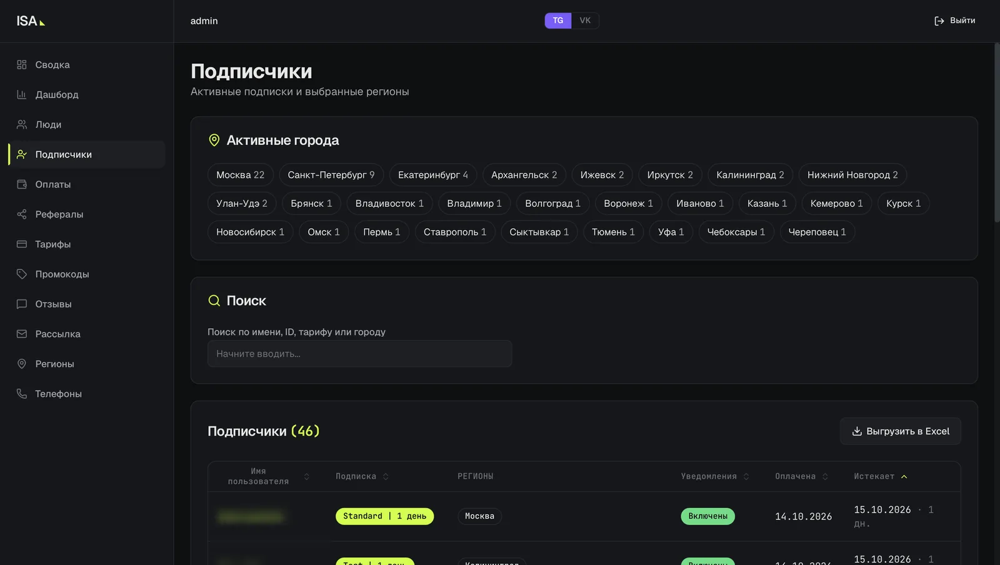

Строю LLM-агентов и инфраструктуру под них: от self-hosted моделей на своём GPU до production-сервисов с RAG, интеграциями и передачей диалога человеку. 3 призовых места на хакатонах в 2026 году.
Компания собирает под заказ серверы, СХД и сетевое оборудование, в том числе для госзаказчиков по 44-ФЗ и 223-ФЗ. Агент ведёт клиента от запроса до готового КП, менеджер подключается в конце.
Моя роль: основу заложил предыдущий разработчик, я довёл систему до production. Все сценарии в n8n, векторизация базы знаний и RAG, сервис подбора комплектующих, веб-конфигуратор, доработка админки менеджера.
Сценарии в n8n: роутеры Telegram и почты, LLM-сервис, отправка ответов и КП, API веб-конфигуратора
RAG по базе знаний: правила подбора, профили нагрузок, troubleshooting; суммаризация вложений клиента
Подбор комплектующих без LLM: мой сервис на FastAPI подбирает сборку по правилам поверх каталога в PostgreSQL и выпускает КП и ТЗ по 44-ФЗ и 223-ФЗ
Ответ в JSON по схеме с проверкой и маршрутизацией: текст клиенту, спецификация или передача человеку
Админка менеджера: диалоги в реальном времени, AI ON/OFF
Telegram-бот по подписке присылает новые объявления о продаже iPhone по фильтрам и регионам. Проект переписали вдвоём с нуля, я отвечал за пайплайн данных.
Получение новых объявлений в реальном времени, очередь в RabbitMQ, дедупликация и гибкие фильтры
Рассылку вынес в отдельный сервис на Go: сбор больше не ждёт рассылку
~50активных подписчиков
30+городов
Python·Go·RabbitMQ·PostgreSQL·Docker

Админка проекта, вкладка Telegram, личные данные скрыты
Kubernetes-стенд одной командой
Кейс хакатона10.2026
Скрипт превращает чистую Ubuntu 24.04 в кластер Kubernetes (kubeadm) с веб-приложением по HTTPS за 6–10 минут. Повторный запуск ничего не меняет.
Gateway API на Traefik: TLS через cert-manager, canary 80/20